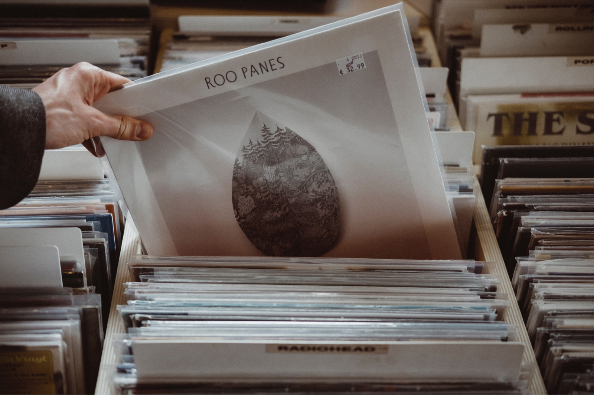
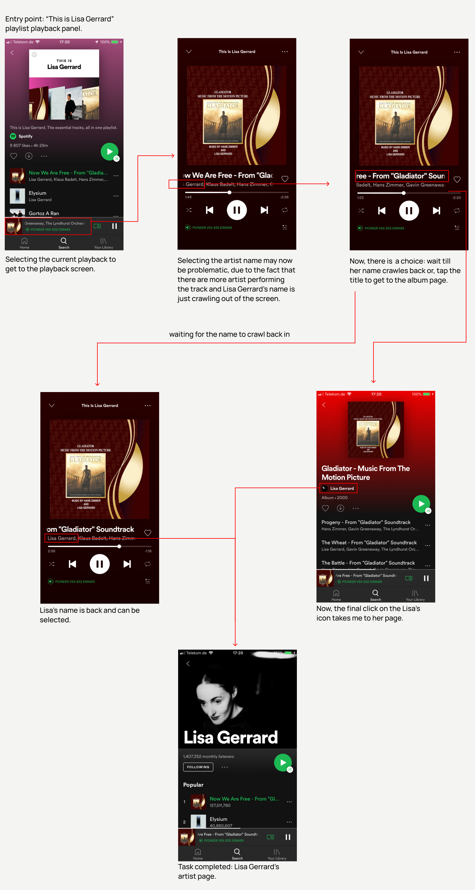
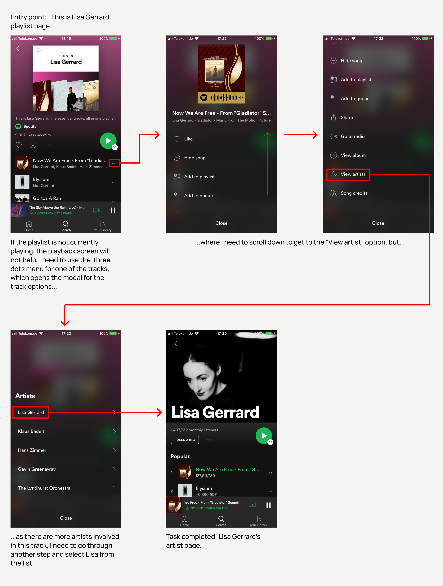
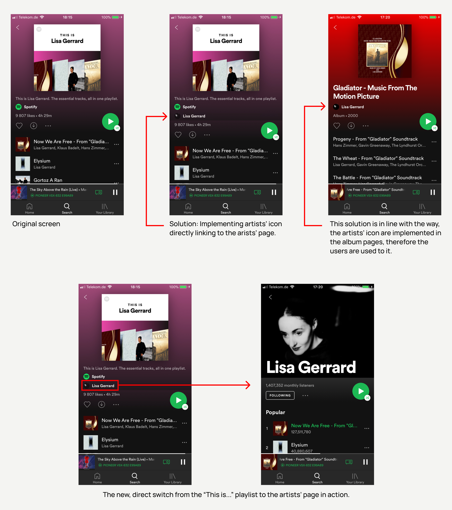
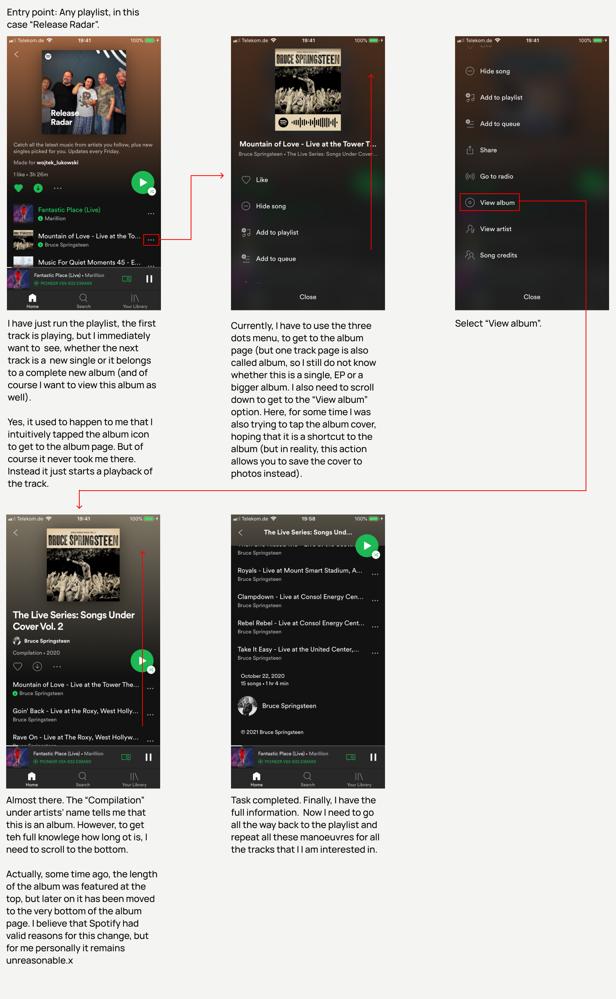
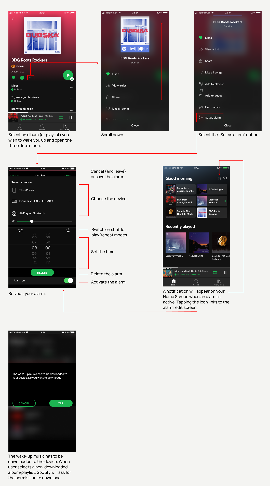
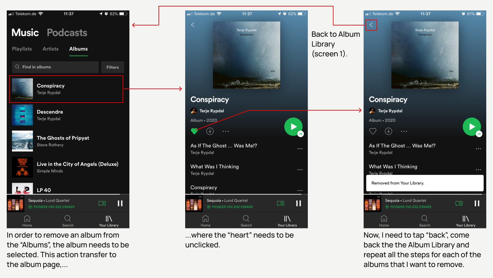
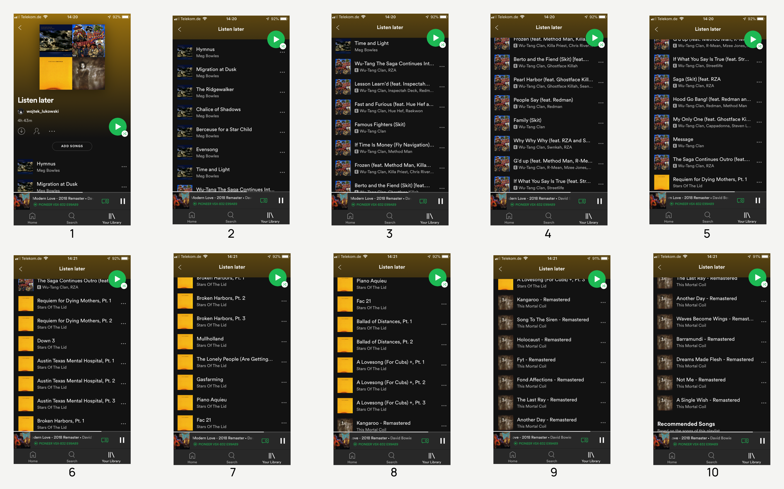
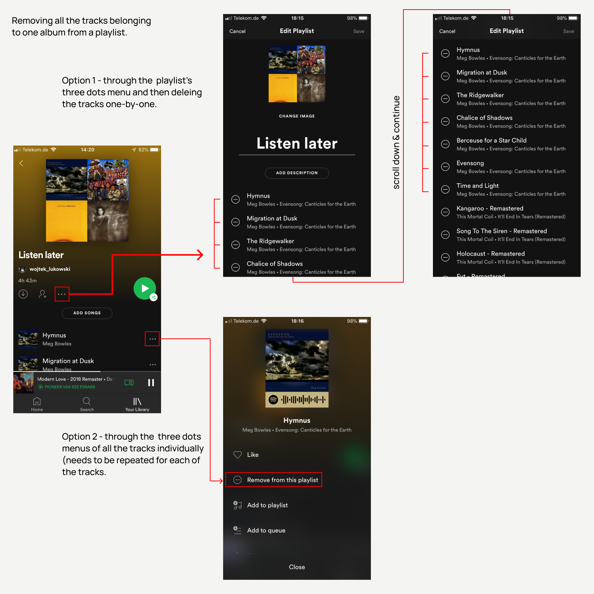

How to improve SpotifyMy ideas to make the Spotify user experience even better.

Background
I am a heavy Spotify user. I like the app for allowing me to come back to the tunes I love, but also experiment and discover new sounds. Overall, I appreciate its user interface, but I also have some ideas how I personally would make it even better. Please remember that these improvements are designed from my personal perspective and I have not consulted them with other users nor conducted any tests or research. Moreover, I have no knowledge whether Spotify team have looked at similar issues and whether potentially they decided not to follow up on them.
Accessing the artist's page from the "This is (artist)" playlist
I like the idea of "This is (artist)" playlist. However, very often browsing this kind of list, I want to directly switch to the particular artists' page.
While on desktop the artist's page can be accessed directly (by clicking the artist name on one of the tracks), on mobile this possibility is missing and the task can be completed either by using the playback panel/screen (option
availabvle only when the playlist is currentle playing) or by using the three dots menu of one of the tracks and scrolling for the “View artist(s)” option. Both of them are not direct and thus far from perfect.
Existing option 1: using the playback panel/screen (available only when the playlist playing).

Existing option 2: using the three dots menu on one of the tracks from the playlist.

Suggested solution: implementing the artist's icon to the playlist screen (analogically to the way it is implemented on album screens), which directly links to the artist's page.

The alternative solution would be to link the big, playlist icon to the artist's page. The advantage ot this option would be the fact that the playlist icon is bigger, thus easier to tap. The disadvantage - that this solution has not yet
been used by the service, so the users are not used to it.
Direct access from the playlist to the album page of a track from this playlist (mobile)
When I listen to different playlists, it happens quite often that I want to see the album pages of some tracks from the playlist (but not necessarily for the track which is playing at the very moment). This is very true for
example for the "Release Radar" playlist, which is a Spotify generated playlist with new releases customized especially for the user, based on the music and artists he listens to. I run the playlist and then scan the list of tracks.
Whenever I find a track from the artist I am interested in, I immediately want to see whether it is just a signle new track or a complete new album.
While on desktop, it can be done by clicking the album title in the playlist's list of tracks, on mobile it requires more actions.

Suggested solution: Implementing the link to the album page to the album cover icon in the playlist.
While I already enjoy the "Sleep timer" feature, that allows me to fall asleep listening to my favorite calming down music, I am still missing waking up to the music. I do not understand why Spotify does not offer such a basic and
comforting function. There may be some reasons behind that that I do not know, therefore, I have designed a Spotify alarm clock. Actually, two versions of it.
One very important assumption is that the music which is supposed to be set as a wake up music must be downloaded to the device. This is for the technical reasons - e.g. when the users set an alarm with non-downloaded music, but their
mobile data usage is disabled
and there is no wifi - then the alarm music could not be played off-line. For this reason, when the users sets up non-downloaded music, Spotify will ask for the permission to download it.
The first option is very simple. With a one-off alarm that needs to be activated every time you want your music to wake you up.

The second option is more complex, as it allows to set up multiple alarms with various albums and playlists and various activation schemes.
This one is rather a quick fix, but there will be much more on "Albums" coming in the next section.
As I keep adding albums to my Album Library, it gradually becomes a mess and I need a "clean up session" from time to time. The current way to remove an album from the "Albums" sections looks like this:

While it is not really complicated, removing a number of albums one after another becomes irritating, as I constantly need to switch between the "Albums" and the particular album screens, unclikcking the heart for each album.
I believe that it could be done faster, smoother and thus more efficient. The most intuitional way would be to "swipe left and delete", but the swipe gesture on this screen is already reserved for switching from Music to Podcasts(and
swipe right from "Albums" to "Artists"). Therefore I have designed two alternative options.
Option 1 - deleting individual albums
Option 2 - introducing "Edit Albums" option (analogical to the Edit Playlist)
I have a problem with the chaos rising in my Albums Library as I keep adding there new albums (which I want to remember for any reason) and therefore, I miss some system to manage and catalogue these albums.
They are all there altogether, side-by-side, classical music with hip-hop and heavy metal with new age, albums for sport, dining and sleeping, albums that I always come back to with albums that I listen now, but I know that I will forget them in couple of days and on top, albums of the artists I have never heard about before, but I just want to check them out at some point. All perfectly mixed up in a sequence in which they have been added (ok, I can change the sorting to “Titles” or “Artists”, but that does not really help much, as Chopin will be next to The Cure, Rachmaninoff next to Rammstein and Metallica next to Mozart… not the type of sorting I have in mind). So, every time I want to find an album from my Library, I need to browse through the mess. No, it’s not about simply typing the title in the finder either – sometimes I want to see all of my e.g. “sport” albums and then decide which one I am going to be listening, but I need to see them all first. Or, for the artists that are added “for later” I very often do not remember either the name of the artist or the title of the album – I just need to see the cover, as that is all I can recall.
Theoretically that could easily be solved if, instead of saving my albums in Albums, I would create separate dedicated playlists and simply save the albums there. Then I would have for example “Sport”, “Sleep”, “Listen later”, “Classical”, "Good
Mood", "Bad Mood" or “My
treasures” playlists. Sounds perfect, but…
…the playlists are created with combining rather individual tracks than (more or less) complete albums in mind, therefore:
There is no way to see all the albums from a playlist displayed simply one-by-one. There will be a list tracks with either an album icon assigned to each track (mobile) or album title listed (desktop). If one of the albums
happens to be for example a 200 tracks long “Chopin: Classical Music for Reading” then that is a quite a bit of scrolling.

The playlists consisting of only four albums spans for ten screens and there is no possibility to see just the four album covers next to each other. Imagine a playlist with fifty albums or more...
It is not possible to remove all the tracks belonging to one album with a single action (especially on mobile). On desktop I need to select them all first and then delete, but on mobile, I need to delete them one-by-one (either
by
”edit playlist” reached by the playlist three dots menu or by opening the individual three dots menus of the particular tracks for the mobile version). Now, think again about removing the 200 tracks of the Chopin’s album.

Removing from a playlist all the tracks belonging to one album.